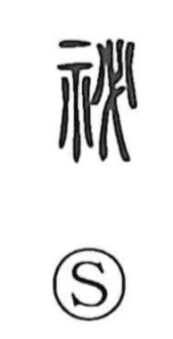

秘

Uncategorized
Kun: himeru, hisoka, kakusu | On: hi
secret ・ to conceal ・ to enshrine ・ to hoard
Explanation
A phono-semantic graph whose older form is 祕, later standardized as 秘. The phonetic element 必 originally depicts the head of a halberd or broad axe fixed to its shaft. In related graphs, 宓 shows that weapon head laid to rest within a mausoleum where ancestral spirits are venerated, and 密 adds fire to indicate a rite of exorcism and purification by flame, seeking tranquility for the ancestors’ souls. In 祕, adding 示 (the ritual altar) to 必 pictures offering the weapon head before the gods. Because rites using this weapon head as a cursing implement were conducted out of sight as secret ceremonies, the character came to mean “secret,” as well as “to enshrine, to hoard, to conceal.” Today 秘 is the commonly used form.